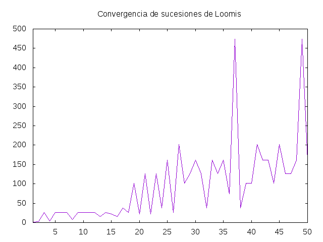
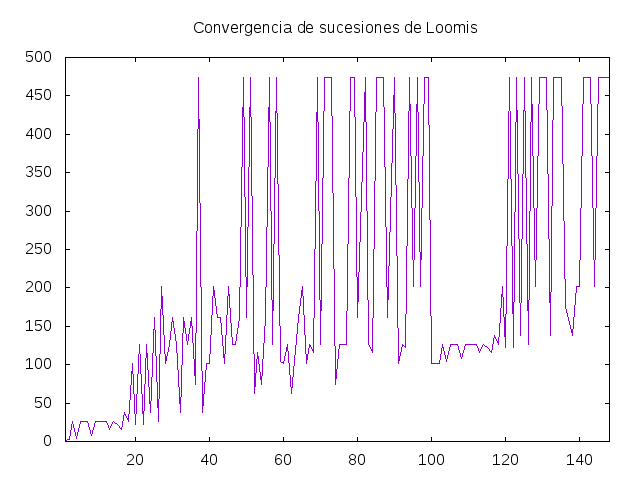

Las sucesiones de Loomis
La sucesión de Loomis generada por un número entero positivo x es la sucesión cuyos términos se definen por
- f(0) es x
- f(n) es la suma de f(n-1) y el producto de los dígitos no nulos de f(n-1)
Los primeros términos de las primeras sucesiones de Loomis son
- Generada por 1: 1, 2, 4, 8, 16, 22, 26, 38, 62, 74, 102, 104, 108, 116, 122, ...
- Generada por 2: 2, 4, 8, 16, 22, 26, 38, 62, 74, 102, 104, 108, 116, 122, 126, ...
- Generada por 3: 3, 6, 12, 14, 18, 26, 38, 62, 74, 102, 104, 108, 116, 122, 126, ...
- Generada por 4: 4, 8, 16, 22, 26, 38, 62, 74, 102, 104, 108, 116, 122, 126, 138, ...
- Generada por 5: 5, 10, 11, 12, 14, 18, 26, 38, 62, 74, 102, 104, 108, 116, 122, ...
Se observa que a partir de un término todas coinciden con la generada por 1. Dicho término se llama el punto de convergencia. Por ejemplo,
- la generada por 2 converge a 2
- la generada por 3 converge a 26
- la generada por 4 converge a 4
- la generada por 5 converge a 26
Definir las siguientes funciones
sucLoomis :: Integer -> [Integer] convergencia :: Integer -> Integer graficaConvergencia :: [Integer] -> IO ()
tales que
- (sucLoomis x) es la sucesión de Loomis generada por x. Por ejemplo,
λ> take 15 (sucLoomis 1) [1,2,4,8,16,22,26,38,62,74,102,104,108,116,122] λ> take 15 (sucLoomis 2) [2,4,8,16,22,26,38,62,74,102,104,108,116,122,126] λ> take 15 (sucLoomis 3) [3,6,12,14,18,26,38,62,74,102,104,108,116,122,126] λ> take 15 (sucLoomis 4) [4,8,16,22,26,38,62,74,102,104,108,116,122,126,138] λ> take 15 (sucLoomis 5) [5,10,11,12,14,18,26,38,62,74,102,104,108,116,122] λ> take 15 (sucLoomis 20) [20,22,26,38,62,74,102,104,108,116,122,126,138,162,174] λ> take 15 (sucLoomis 100) [100,101,102,104,108,116,122,126,138,162,174,202,206,218,234] λ> sucLoomis 1 !! (2*10^5) 235180736652
- (convergencia x) es el término de convergencia de la sucesioń de Loomis generada por x xon la geerada por 1. Por ejemplo,
convergencia 2 == 2 convergencia 3 == 26 convergencia 4 == 4 convergencia 17 == 38 convergencia 19 == 102 convergencia 43 == 162 convergencia 27 == 202 convergencia 58 == 474 convergencia 63 == 150056 convergencia 81 == 150056 convergencia 89 == 150056 convergencia (10^12) == 1000101125092
- (graficaConvergencia xs) dibuja la gráfica de los términos de convergencia de las sucesiones de Loomis generadas por los elementos de xs. Por ejemplo, (graficaConvergencia ([1..50]) dibuja

y graficaConvergencia ([1..148] \ [63,81,89,137]) dibuja

Soluciones
import Data.List ((\\)) import Data.Char (digitToInt) import Graphics.Gnuplot.Simple (plotList, Attribute (Key, Title, XRange, PNG)) -- 1ª definición de sucLoomis -- ========================== sucLoomis :: Integer -> [Integer] sucLoomis x = map (loomis x) [0..] loomis :: Integer -> Integer -> Integer loomis x 0 = x loomis x n = y + productoDigitosNoNulos y where y = loomis x (n-1) productoDigitosNoNulos :: Integer -> Integer productoDigitosNoNulos = product . digitosNoNulos digitosNoNulos :: Integer -> [Integer] digitosNoNulos x = [read [c] | c <- show x, c /= '0'] -- 2ª definición de sucLoomis -- ========================== sucLoomis2 :: Integer -> [Integer] sucLoomis2 = iterate siguienteLoomis siguienteLoomis :: Integer -> Integer siguienteLoomis y = y + productoDigitosNoNulos y -- 3ª definición de sucLoomis -- ========================== sucLoomis3 :: Integer -> [Integer] sucLoomis3 = iterate ((+) <*> product . map (toInteger . digitToInt) . filter (/= '0') . show) -- Comparación de eficiencia -- ========================= -- λ> sucLoomis 1 !! 30000 -- 6571272766 -- (2.45 secs, 987,955,944 bytes) -- λ> sucLoomis2 1 !! 30000 -- 6571272766 -- (2.26 secs, 979,543,328 bytes) -- λ> sucLoomis3 1 !! 30000 -- 6571272766 -- (0.31 secs, 88,323,832 bytes) -- 1ª definición de convergencia -- ============================= convergencia1 :: Integer -> Integer convergencia1 x = head (dropWhile noEnSucLoomisDe1 (sucLoomis x)) noEnSucLoomisDe1 :: Integer -> Bool noEnSucLoomisDe1 x = not (pertenece x sucLoomisDe1) sucLoomisDe1 :: [Integer] sucLoomisDe1 = sucLoomis 1 pertenece :: Integer -> [Integer] -> Bool pertenece x ys = x == head (dropWhile (<x) ys) -- 2ª definición de convergencia -- ============================= convergencia2 :: Integer -> Integer convergencia2 = aux (sucLoomis3 1) . sucLoomis3 where aux as@(x:xs) bs@(y:ys) | x == y = x | x < y = aux xs bs | otherwise = aux as ys -- 3ª definición de convergencia -- ============================= convergencia3 :: Integer -> Integer convergencia3 = head . interseccion (sucLoomis3 1) . sucLoomis3 -- (interseccion xs ys) es la intersección entre las listas ordenadas xs -- e ys. Por ejemplo, -- λ> take 10 (interseccion (sucLoomis3 1) (sucLoomis3 2)) -- [2,4,8,16,22,26,38,62,74,102] interseccion :: Ord a => [a] -> [a] -> [a] interseccion = aux where aux as@(x:xs) bs@(y:ys) = case compare x y of LT -> aux xs bs EQ -> x : aux xs ys GT -> aux as ys aux _ _ = [] -- 4ª definición de convergencia -- ============================= convergencia4 :: Integer -> Integer convergencia4 x = perteneceA (sucLoomis3 x) 1 where perteneceA (y:ys) n | y == c = y | otherwise = perteneceA ys c where c = head $ dropWhile (< y) $ sucLoomis3 n -- Comparación de eficiencia -- ========================= -- λ> convergencia1 (10^4) -- 150056 -- (2.94 secs, 1,260,809,808 bytes) -- λ> convergencia2 (10^4) -- 150056 -- (0.03 secs, 700,240 bytes) -- λ> convergencia3 (10^4) -- 150056 -- (0.03 secs, 1,165,496 bytes) -- λ> convergencia4 (10^4) -- 150056 -- (0.02 secs, 1,119,648 bytes) -- -- λ> convergencia2 (10^12) -- 1000101125092 -- (1.81 secs, 714,901,080 bytes) -- λ> convergencia3 (10^12) -- 1000101125092 -- (1.92 secs, 744,932,184 bytes) -- λ> convergencia4 (10^12) -- 1000101125092 -- (1.82 secs, 941,053,328 bytes) -- Definición de graficaConvergencia -- ================================== graficaConvergencia :: [Integer] -> IO () graficaConvergencia xs = plotList [ Key Nothing , Title "Convergencia de sucesiones de Loomis" , XRange (fromIntegral (minimum xs),fromIntegral (maximum xs)) , PNG "Las_sucesiones_de_Loomis_2.png" ] [(x,convergencia2 x) | x <- xs] -- --------------------------------------------------------------------- -- § Verificación -- -- --------------------------------------------------------------------- verifica f = hspec $ do it "e1" $ convergencia 2 `shouldBe` 2 it "e2" $ convergencia 3 `shouldBe` 26 it "e3" $ convergencia 4 `shouldBe` 4 it "e4" $ convergencia 17 `shouldBe` 38 it "e5" $ convergencia 19 `shouldBe` 102 it "e6" $ convergencia 43 `shouldBe` 162 it "e7" $ convergencia 27 `shouldBe` 202 where convergencia = f -- --------------------------------------------------------------------- -- § Soluciones de alumnos -- -- --------------------------------------------------------------------- -- alerodrod5 -- ========== sucLoomisA1 :: Integer -> [Integer] sucLoomisA1 = iterate f where f x = x + product [read [d] | d <- show x, read [d] /= 0] convergenciaA1 :: Integer -> Integer convergenciaA1 x = head [n | n <- sucLoomisA1 x , n `elem` takeWhile (<=n) (sucLoomisA1 1)] graficaConvergenciaA1 :: [Integer] -> IO () graficaConvergenciaA1 xs = plotList [ Key Nothing , Title "ConvergenciaA1 de sucesiones de Loomis"] (map convergenciaA1 xs) -- angruicam1 -- ========== -- import Data.Char (digitToInt) -- import Graphics.Gnuplot.Simple (plotList, Attribute (Key, Title, XRange)) sucLoomisA2 :: Integer -> [Integer] sucLoomisA2 = iterate ((+) <*> product . map (toInteger . digitToInt) . filter (/= '0') . show) convergenciaA2 :: Integer -> Integer convergenciaA2 = head . intersectOrd (sucLoomisA2 1) . sucLoomisA2 -- (intersectOrd xs ys) es la intersección entre las listas ordenadas xs -- e ys. Por ejemplo, -- λ> take 10 (intersectOrd (sucLoomisA2 1) (sucLoomisA2 2)) -- [2,4,8,16,22,26,38,62,74,102] intersectOrd :: Ord a => [a] -> [a] -> [a] intersectOrd = aux where aux [] ys = [] aux xs [] = [] aux (x:xs) (y:ys) = case compare x y of LT -> aux xs (y:ys) EQ -> x : aux xs ys GT -> aux (x:xs) ys graficaConvergenciaA2 :: [Integer] -> IO () graficaConvergenciaA2 xs = plotList [Key Nothing, Title "ConvergenciaA2 de sucesiones de Loomis"] (map convergenciaA2 xs) -- jaiturrod -- ========= sucLoomisA3 :: Integer -> [Integer] sucLoomisA3 = iterate f where f x = x + product (cifrasNoNulas x) cifrasNoNulas :: Integer -> [Integer] cifrasNoNulas n = [read [x] | x <- show n, x /= '0'] convergenciaA3 :: Integer -> Integer convergenciaA3 n = head [x | x <- sucLoomisA3 n , x `elem` takeWhile (<= x) (sucLoomisA3 1)] graficaConvergenciaA3 :: [Integer] -> IO () graficaConvergenciaA3 xs = plotList [ Key Nothing , Title "ConvergenciaA3 de sucesiones de Loomis"] (map convergenciaA3 xs) -- agumaragu1 -- ========== sucLoomisA4 :: Integer -> [Integer] sucLoomisA4 x = scanl f x (repeat 1) where f n _ = n + product [read [c] | c <- show n, c /= '0'] convergenciaA4 :: Integer -> Integer convergenciaA4 x = perteneceA (sucLoomisA4 x) 1 where perteneceA (y:ys) n | y == c = y | otherwise = perteneceA ys c where c = head $ dropWhile (< y) $ sucLoomisA4 n graficaConvergenciaA4 :: [Integer] -> IO () graficaConvergenciaA4 xs = plotList [] (0 : map convergenciaA4 xs) -- anadebla -- ======== sucLoomisA5 :: Integer -> [Integer] sucLoomisA5 = iterate suma digitosC :: Integer -> [Integer] digitosC n = [read [x] | x <- show n] suma :: Integer -> Integer suma x = x + product [n | n <- digitosC x, n /= 0] convergenciaA5 :: Integer -> Integer convergenciaA5 x = head [n | n <- sucLoomisA5 x , n `elem` takeWhile (<= n)(sucLoomisA5 1)] graficaConvergenciaA5 :: [Integer] -> IO () graficaConvergenciaA5 xs = plotList [Key Nothing] [convergenciaA5 x | x <- xs] -- Chema Cortés -- ============ sucLoomisA6 :: Integer -> [Integer] sucLoomisA6 = iterate aux where aux x = x + product [ read [c] | c <- show x, c /= '0' ] convergenciaA6 :: Integer -> Integer convergenciaA6 = aux (sucLoomisA6 1) . sucLoomisA6 where aux (x : xs) (y : ys) | x == y = x | x < y = aux xs (y : ys) | otherwise = aux (x : xs) ys graficaConvergenciaA6 :: [Integer] -> IO () graficaConvergenciaA6 xs = plotList [Key Nothing, Title "ConvergenciaA6 de sucesiones de Loomis"] [ (x, convergenciaA6 x) | x <- xs ]